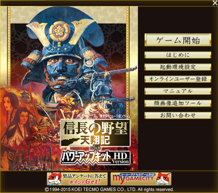
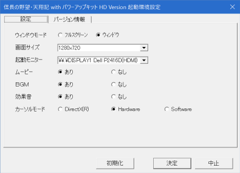

起動環境設定とは、
 
の画面のパラメータのことです。
SDKでこれらパラメータを扱うことで、GUIから設定不可能な値を設定することが可能となります。
この起動環境設定は、ゲーム起動の前に設定するものですので、普通はゲーム起動前のメソッドに相当する
内で使用することとなります。
起動環境設定に関する主な所は以上となります。
他にもプロパティがありますので、
「起動環境設定.h」や「起動環境設定列挙.h」などを参照してください。